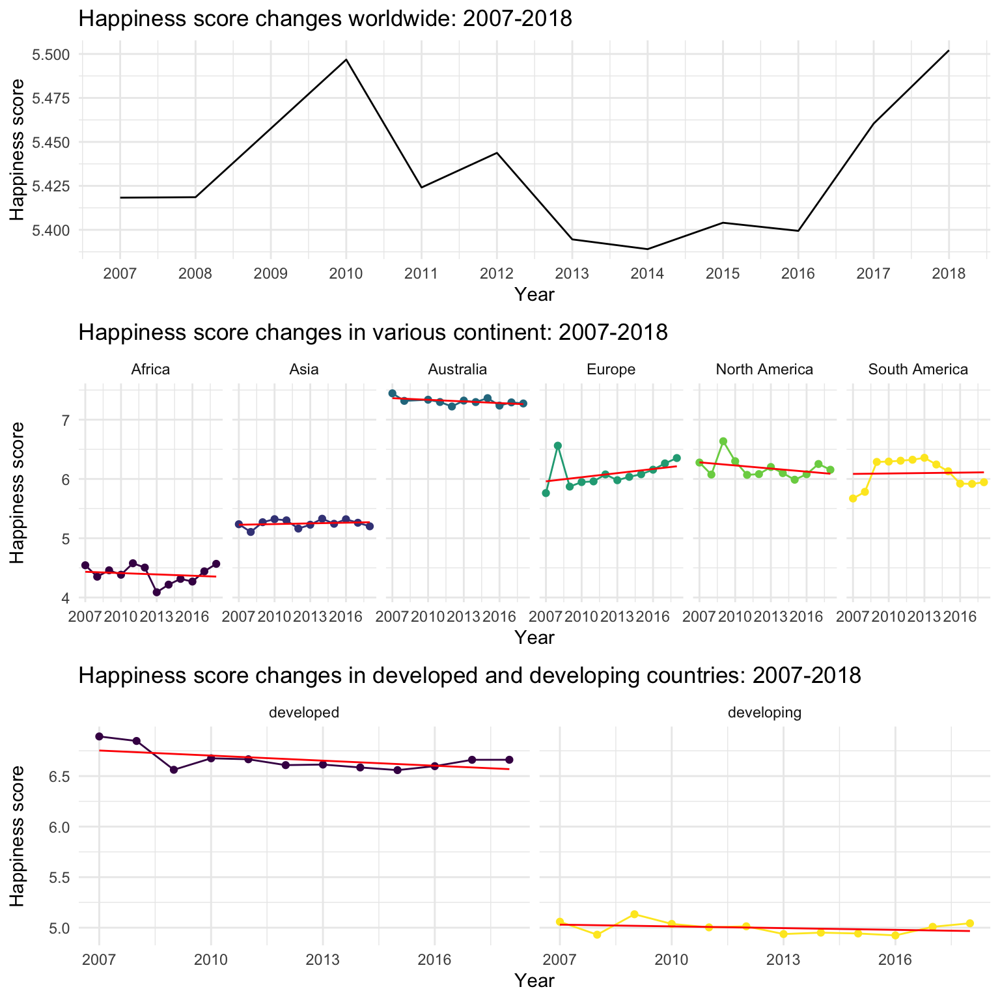
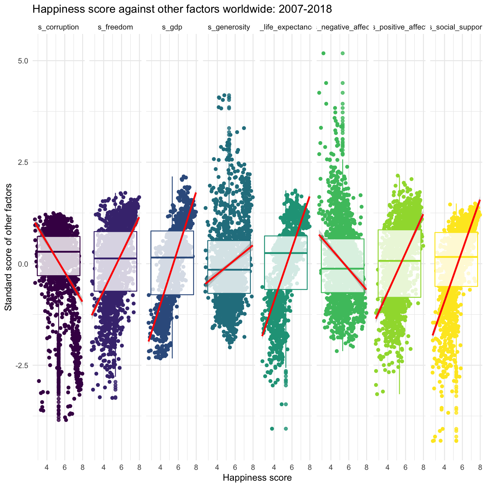
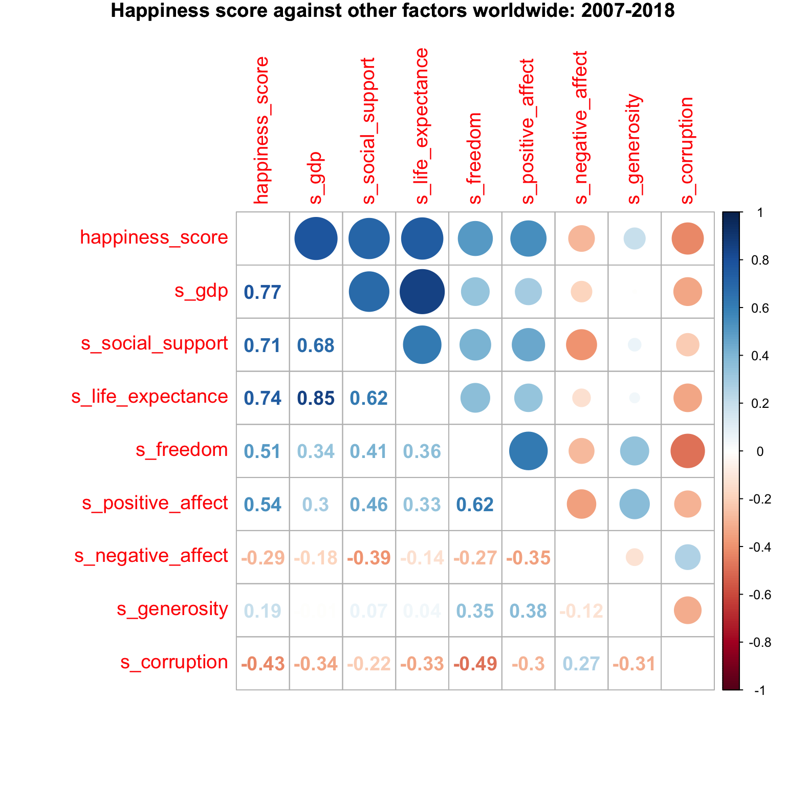
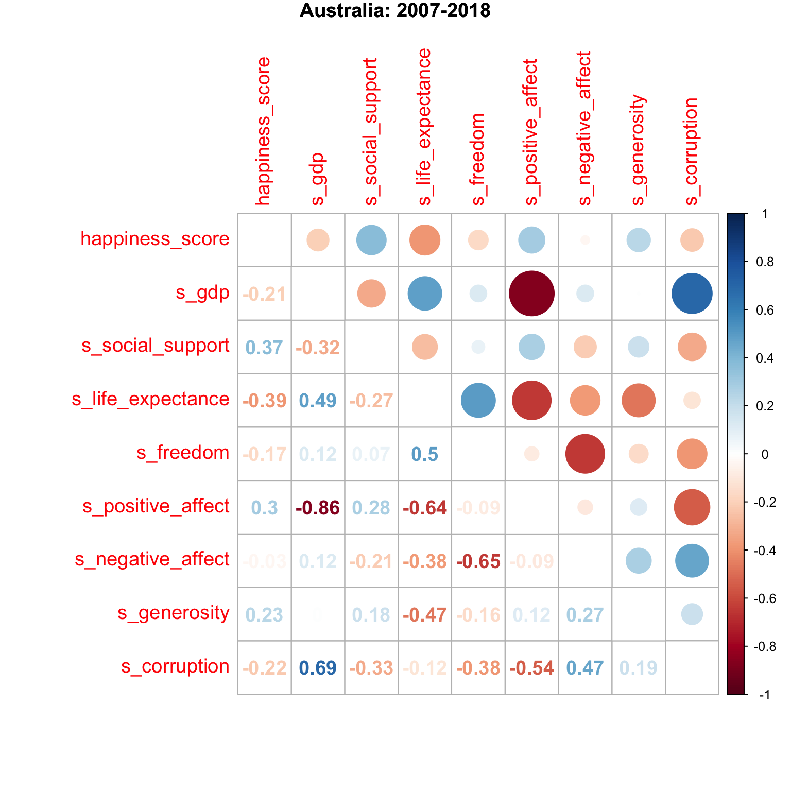
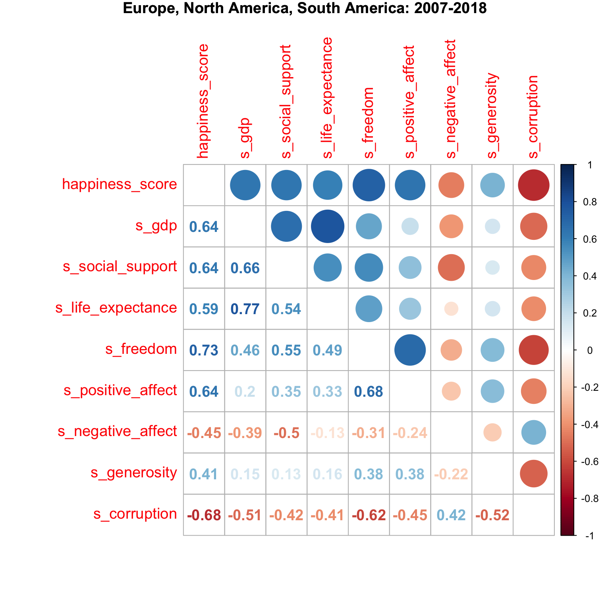
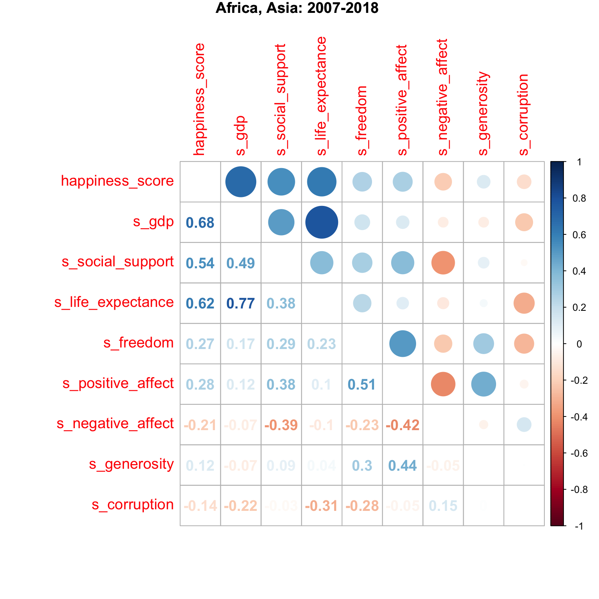
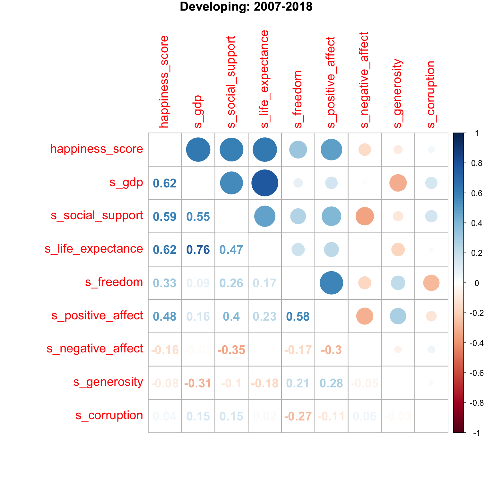
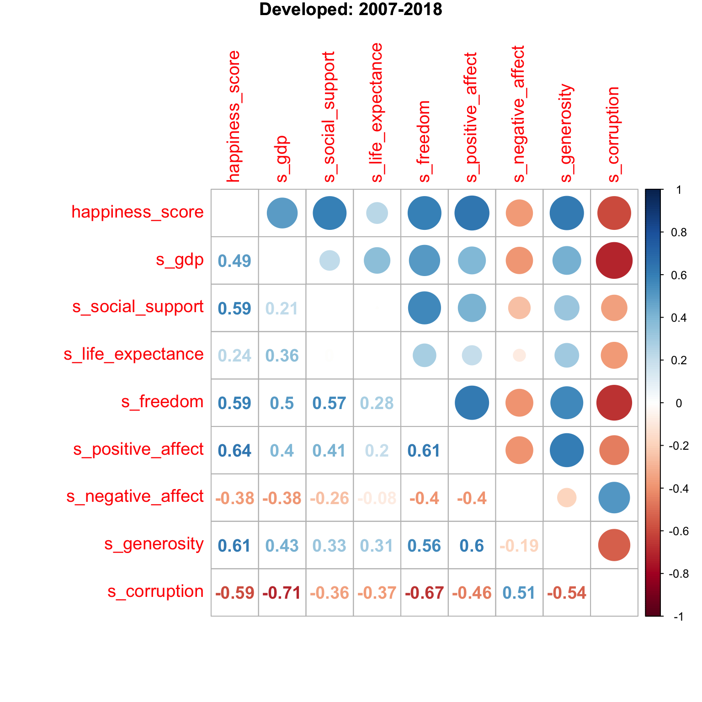

In the original data, they use log to get the result of GDP, we try to transfer it back to the real scale. We divide these countries into developing and developed country by the criteria that some economists prefer to see a country with per capita GDP of at least $25,000 to be declared as developed.
We add a new variable to distinguish the continent, because we want to see whether the association of happiness scores and other factors will change dependes on variaous continents.
To better show the association of other factors and happiness score, we standardaize the value of other factors by substracting mean and devideing standard error. This is becasue the scale of gdp and life_expectancy are dramatically different from other factors.

We firstly explore the changes of happiness score over time worldwide, by continents and by developing levels.
From the first plot, we can easily find that the mean happiness score increases from 2007 to 2010, and gradually decreases to the lowest point in 2014. Finally, it increases in the recent years. 2014, 2018
From the second plot, we divide these countries into different regions by the geographic continent. Australia has the overall highest and Africa has the overall lowest happiness score. Only Europe and Asia show the general increasing trend of happiness score over time.
We can roughly further divide these continents into three groups base on the happiness scores. The high happiness score group contains Australis, the medium happiness score group contains Europe, North America and South America, and the low happiness score group contains Africa and Asia.
From the third plot, the mean happiness score is obviously higher in developed countries than it in developing countries.

From the scatterplot, the factors negative_affect and corruption have the negative association with happiness score, but gdp, social support, life_expectancy, freedom, positive_affect and generosity have the positive association.
From the correlation matrix plot, the happiness score is highly associated with gdp, social support and life_expectancy(> 0.7). In addition, gdp and life_expctancy are highly correlated with each other(> 0.7).

Australia has the highest happiness score, and the score does not have high correlation with other factors(not greater than 0.4). gdp is strongly positively associated with corruption(0.69) and negatively assoicated with positive_affe t(-0.86)
Europe, North America, South America have the medium happiness score, and the score has moderate correlation with gdp, social support, life_expectancy, freedom, positive_affect and corruption(0.6 - 0.7)
Africa and Asia have the lowest happiness score, and the score has moderate correlation with gdp, social support and life_expectancy(0.6 - 0.7).

Developing coountries have lower happiness score , and the score has moderate correlation with gdp, social support and life_expectancy(around 0.6).
Developed coountries have higher happiness score , and the score has moderate correlation with social support,freedom, positive_affect, negative_affect, generosity and corruption (around 0.6)
| term | estimate | std.error | statistic | p.value |
|---|---|---|---|---|
| (Intercept) | -4.352 | 0.684 | -6.362 | 0.000 |
| freedom | 0.216 | 0.143 | 1.511 | 0.131 |
| negative_affect | 0.160 | 0.203 | 0.788 | 0.431 |
| generosity | -0.112 | 0.105 | -1.069 | 0.285 |
| life_expectance | 0.054 | 0.003 | 19.635 | 0.000 |
| positive_affect | 2.327 | 0.189 | 12.295 | 0.000 |
| corruption | -0.741 | 0.131 | -5.638 | 0.000 |
| developdeveloping | 2.450 | 0.679 | 3.609 | 0.000 |
| social_support | 6.169 | 0.687 | 8.986 | 0.000 |
| corruption:developdeveloping | 0.935 | 0.195 | 4.807 | 0.000 |
| developdeveloping:social_support | -4.039 | 0.705 | -5.732 | 0.000 |
According to the ## Discussion:
What were your findings? Are they what you expect? What insights into the data can you make?